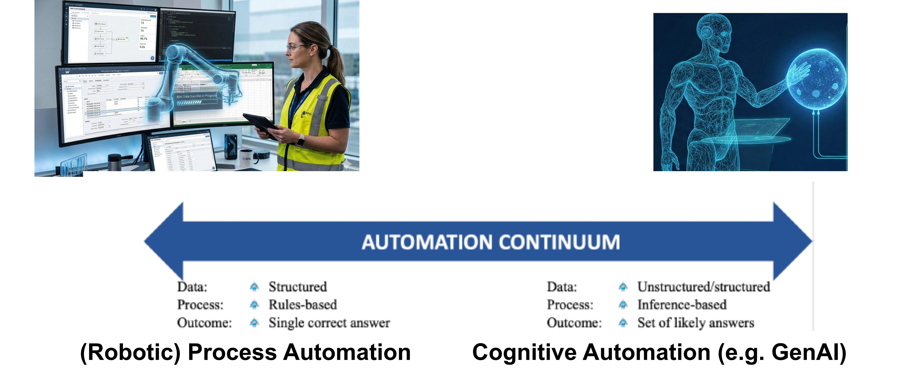
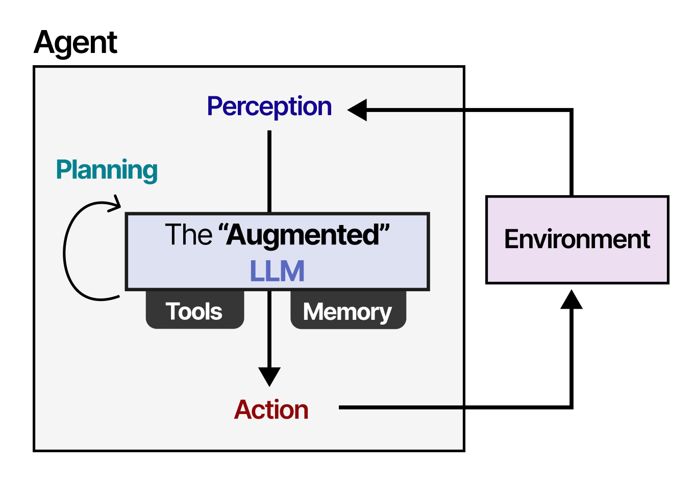

Workshop 1 — AI Fluency Framework
Donnerstag, 24.09.2026 · 09:00–13:00 · Campus Südstadt
Lernziele
Was Sie nach diesem Workshop können
- Process Automation und Cognitive Automation an konkreten Tätigkeiten aus Tax, Audit und Advisory unterscheiden,
- das 4D-Framework (Delegate, Describe, Discern, Diligence) in eigenen Worten erklären,
- die drei Konfigurationen LLM allein, erweitertes LLM und Agent unterscheiden und für eine eigene Frage die passende auswählen,
- einen einfachen Prompt nach RTF und CREATE strukturieren und an einer Aufgabe aus dem eigenen Lerngebiet anwenden,
- einen Tutor-Bot für das eigene Fachgebiet bauen und mit einer kleinen Test-Suite systematisch prüfen.
🟦 Block 0 — Begrüßung und Kalibrierung · 10 Min
Begrüßung, Lernziele, Hinweis auf den Tutor, kurze Verständigung über Vorerfahrungen mit generativer KI.
🟦 Block 1 — Process vs. Cognitive Automation · 15 Min
Einstieg — Live-Animation: Eine Eingangsrechnung durchläuft denselben Sechs-Schritt-Prozess (Erfassen, Auslesen, Abgleich, ggf. Klärung, Kontierung, Freigabe) auf drei Automatisierungsstufen — manuell, mit Prozessautomation, mit kognitiver Automation. Animation starten: Eingangsrechnung — drei Automatisierungsstufen. Vor der Begriffsklärung: Welche Schritte verändern sich zwischen den drei Stufen, welche bleiben gleich?
Process Automation — regelbasiertes Abarbeiten strukturierter Workflows ohne Verstehen. Cognitive Automation — KI-gestütztes Schließen, Klassifizieren, Zusammenfassen unstrukturierter Inhalte. Das Service-Automation-Continuum nach Lacity & Willcocks (2021) und Willcocks & Lacity (2024) ordnet beide Kategorien plus Intelligent Automation als orchestrierende Schicht in eine kohärente Sourcing-Strategie ein.

➡️ Übung 1 — Diagnose-Quiz Process vs. Cognitive · 18 Min (8 Min Solo + 4 Min TPS + 3 Min Plenum + 3 Min Puffer)
🟦 Block 2 — 4D-Framework Kurzdurchlauf · 7 Min
Vier Kernkompetenzen, je drei Subkategorien nach Dakan & Feller (2025). Delegate (Problem-, Platform-, Task-Awareness) · Describe (Product-, Process-, Performance-Description) · Discern (Product-, Process-, Performance-Discernment) · Diligence (Creation-, Transparency-, Deployment-Diligence). Zwei Loops: Delegate–Diligence (strategisch), Describe–Discern (operativ). Heute behandeln wir Delegate, Describe und Discern in dieser Reihenfolge; Diligence wird morgen vertieft.
🟦 Block 3 — Delegate: Modell, Harness, agentische Nutzung · 12 Min
KI ist nicht KI
KI-Äpfel und KI-Birnen: “KI” vor und nach November 2022 meint oft ganz verschiedene Dinge. Früher ging es aus Anwendersicht grob gesagt meist um bessere statistische Prognosemodelle zur Nutzung durch Expertinnen und Experten (etwa für optimale Routen oder Container-Ablage) (Russell & Norvig, 2021). Seit ChatGPT sprechen wir von viel breiteren Formen der Nutzung, Milliarden von Usern und extremer KI-Hype.
Seit spätestens 2026 hat sich die Bedeutung wieder etwas geändert. Jetzt sind fortgeschrittene Modelle bereits sehr selbstständig und können teils über Stunden nachdenken, recherchieren und Text oder Software zusammenstellen. Das hat wenig mit den einfachen Chatbots ohne Internetanbindung zu tun, die 2022-23 auch noch häufig halluzinierten. Halluzinationen treten immer noch häufig auf, aber vor allem bei den einfacheren Modellen und wenig professioneller Nutzung (z.B. wenn man nur eine Frage ohne Kontext und Qualitätskriterien stellt).
Drei Konfigurationen muss man heute unterscheiden:
- LLM allein — ein Textgenerator. Stellen Sie sich einen sehr belesenen Bibliothekar vor, der nur reden kann, nichts nachschlagen und nichts ausführen.
- Erweitertes LLM — dasselbe Modell, ausgestattet mit einem Werkzeuggürtel mit Tools wie Web-Search, File-Upload, Code-Execution (auf Englisch spricht man von einem Geschirr / Harness). Der Bibliothekar bekommt eine Werkbank.
- Agent — ein erweitertes großes Sprachmodell (LLM), das in einer Schleife arbeitet: Ziel, Plan, Werkzeug, Bewertung, neuer Plan. Der Bibliothekar erledigt eigenständig mehrschrittige Aufgaben und meldet sich erst zurück, wenn er fertig ist.

Wichtig: Wer Aufgaben an eine KI delegieren will, muss wissen, in welcher der drei Konfigurationen das eigene System läuft, weil Fähigkeiten und Risikoprofil substanziell verschieden sind (Grootendorst, 2025; Mollick, 2024).
➡️ Übung 2 — Karriereentwicklung im Modellvergleich · 22 Min (15 Min Übung + 4 Min TPS + 3 Min Plenum)
☕ Pause · 10 Min
🟦 Block 4 — Describe: RTF und CREATE · 12 Min
Leitanalogie: Das Sprachmodell ist eher wie ein sehr schlauer jüngerer Kollege als wie ein Taschenrechner — es versteht Anweisungen, braucht Kontext, möchte gezeigt bekommen, was Sie wollen, und wird mit Beispielen besser. Weiterführend dazu: das Kapitel How to speak aus dem begleitenden Lehrbuch (Bartnik, 2026).
Zwei Schemata:
- RTF — Role, Task, Format. Sparsam und schnell. Beispiel: „Sie sind Wirtschaftsprüferin (Role). Erläutern Sie das Going-Concern-Prinzip (Task). Antworten Sie in drei kurzen Absätzen für Erstsemester (Format).”
- CREATE — Character, Request, Examples, Adjustments, Type of output, Extras. Reicher und für komplexe Aufgaben besser geeignet. Beide Schemata mit identischer Beispielaufgabe vorführen, damit der Unterschied direkt sichtbar wird.
Beispiel: Allgemeiner Tutor
Quelle: Angepasst & übersetzt basierend auf (MoreUsefulThingsStudentExercises?), Online: https://www.moreusefulthings.com/student-exercises .
[C] Character
Du bist ein fröhlicher, geduldiger und ermutigender KI-Tutor. Dein Ziel ist es, echtes Verständnis zu fördern. Du arbeitest lernendenzentriert, wertschätzend und siehst Fehler als Lernchancen.
[R] Request
Führe ein dialogisches Lerncoaching durch. Frage nacheinander nach Thema, Lernniveau und Vorwissen. Erkläre Konzepte angepasst, stelle Leitfragen, gib keine direkten Lösungen und überprüfe Verständnis durch Anwendung und Erklärung.
[E] Examples
Halte strikt die Reihenfolge ein: Vorstellung → Thema → Lernniveau → Vorwissen → Erklärung.
Nutze offene Fragen wie „Warum…?“, „Wie…?“, „Was wäre, wenn…?“
Vermeide Fragen wie „Hast du das verstanden?“
[A] Adjustments & Constraints
Immer nur eine Frage.
Nicht fortfahren ohne Antwort.
Sprache, Tiefe und Beispiele anpassen.
Keine fertigen Lösungen.
Antworten möglichst mit einer Frage beenden.
[T] Type of Output
Freundlicher, dialogischer Tutor-Chat in klarer Sprache.
[E] Evaluation & Steps
Arbeite in kleinen Schritten vom Vorwissen zur Anwendung.
Erfolg liegt vor, wenn Lernende erklären, vergleichen und anwenden können.➡️ Übung 3 — Prompt-Umbau und Tutor-Bot · 22 Min (15 Min Übung + 4 Min TPS + 3 Min Plenum)
🟦 Block 5 — Discern: Outputs systematisch prüfen · 20 Min
Eine Möglichkeit, die Antworten von Sprachmodellen für uns besser nutzbar zu machen ist, ihnen Dateien mit Fachkontext zur Verfügung zu stellen. Aber wie gut ist der Output dann wirklich? Das hängt von verschiedenen Faktoren ab - z.B. davon, wie groß das Modell ist, auf welche Werkzeuge es Zugriff hat und wieviel Daten es “im Gedächtnis” behalten kann usw. Letztlich müssen wir das sorgfältig testen, bevor wir die Ergebnisse professionell einsetzen können.

Zwei Ideen, eine Übersetzung auf Tax/Audit:
- RAGAS-Idee — eine Bewertung von Antworten aus Sprachmodell + Speicher (RAG, Retrieval-Augmented-Generation Systemen) entlang weniger Kerngrößen: Faithfulness (passt die Antwort zu den abgerufenen Quellen?), Answer Relevance (beantwortet sie die Frage?), Context Precision und Context Recall (wurden die richtigen Quellen abgerufen?) (Es et al., 2024). Im Kern: ein Test-Set aus Fragen mit erwarteten Antworten, das Sie immer wieder durchlaufen lassen.
- Red-Green-TDD nach Willison — Testfälle zuerst. Sie schreiben fünf bis zehn Beispielfragen mit gewünschten Antworten, lassen den Agenten durchlaufen, markieren rot (fehlerhaft), gelb (teilweise) oder grün (korrekt). Dann iterieren Sie Prompt, Modell und Harness, bis möglichst viele Tests grün werden (Willison, 2025). Die Methode kommt aus dem Test-Driven Development der Software-Entwicklung.
Übersetzung auf Tax/Audit: Eine kleine Sammlung typischer Berufsfragen (Anwendung des Reverse-Charge-Verfahrens, Going-Concern-Prüfung, Behandlung von Rückstellungen) wird zur Test-Suite. Genau das bauen Sie in der nächsten Übung — zum Tutor-Bot aus Übung 3.
➡️ Übung 4 — Tutor-Bot systematisch prüfen · 22 Min (15 Min Übung + 4 Min TPS + 3 Min Plenum)
🟧 Block 6 — Abschluss und Brücke zu Tag 2 · 9 Min
Kurzer Rückblick auf die vier Übungen: Welche der drei Konfigurationen (LLM allein, erweitertes LLM, Agent) ist Ihnen heute am vertrautesten geworden? Welche Test-Frage aus Übung 4 würde morgen im echten Berufsalltag bestehen? Brücke zu Workshop 2: Diligence als vierte Kompetenz — Verantwortung, Transparenz, Verifikation. Konkret morgen: berufsrechtliche Pflichten (WPO § 43, StBerG § 57, DSGVO), Personal AI Policy.
Diskussionsfragen
- An welcher Stelle in Ihrem Studium würde ein Tutor-Bot Sie heute schon ersetzen — und an welcher nicht?
- Item 9 des Diagnose-Quiz (OCR plus ERP-Einspielung) ist ein Hybrid aus Cognitive und Process. Wo verläuft die Grenze in einem realen Workflow Ihrer Wahl?
- Welche Konfiguration aus LLM allein · erweitertes LLM · Agent passt zu welcher Aufgabenklasse Ihres Studienalltags? Wo lohnt sich der Aufpreis für ein stärkeres Modell?
- Wann ist eine Test-Suite mit fünf Fragen aussagekräftiger als eine spontane Qualitätsprüfung? Wann nicht?
Aufgaben
Übung 1 — Diagnose-Quiz Übung 2 — Karriereentwicklung Übung 3 — Prompt-Umbau und Tutor-Bot
Jede Übung dauert maximal 15 Minuten und schließt mit Think-Pair-Share und kurzer Plenum-Auflösung. Innerhalb jeder Übung gibt es eine Erweiterungsfrage für schnelle Studierende — wer früh fertig ist, vertieft, statt zu warten. Die Discern-Übung Tutor-Bot systematisch prüfen eröffnet Workshop 2 als Übung 3 — Tutor-Bot Test-Suite; davor stehen als Einstieg in den zweiten Tag der zweistufige Quellenbindungs-Prompt an der eigenen Prüfungsordnung und das Tutor-geführte Verstehen der RAGAS-Metriken.
Hausaufgabe zum Folgetag
Für Workshop 2 brauchen Sie zwei kostenfreie Accounts. Bitte vor der Sitzung am Freitag einrichten — beides dauert jeweils etwa fünf Minuten.
- Signavio Academic Edition — Account anlegen unter https://academic.signavio.com/p/explorer. Wird in Workshop 2 für die BPMN-Modellierung des Rechnungseingangsprozesses genutzt. Hochschul-E-Mail-Adresse wird empfohlen, kostenfrei, kein Download nötig.
- UiPath Cloud — Account anlegen unter https://cloud.uipath.com/. Wird für das Lesen und Anpassen des Excel-zu-PDF-Bots genutzt. Free-Tier reicht; Studio Web läuft direkt im Browser, kein lokales Studio nötig.
Bitte zu Workshop 2 mitbringen: beide Logins (E-Mail und Passwort gespeichert oder im Browser eingeloggt). Wer keinen Account anlegen kann, schaut beim Sitznachbarn mit — verpasst aber die Anwendungsübung.
Hintergrund / Werkzeuge / Ressourcen
- Originalmaterial 4D-Framework — Cheat Sheet und Practical Overview von Dakan & Feller (2025).
- Begleitlehrbuch — Kapitel 2.4 How to speak und Kapitel 7 Tutor-Prompt-Sammlung.
- O*NET-Berufsbild — Accountants and Auditors (13-2011.00) als Faktenbasis für Übung 2.
- Vergleichsplattform — arena.ai mit Side-by-Side-Modus für Übung 2.
Weiterführend
- Mollick (2024) — Co-intelligence: Living and working with AI (Begleitlektüre zum Studium).
- Dell’Acqua et al. (2023) — Navigating the jagged technological frontier (HBS Working Paper, empirisch zur Produktivitätswirkung).
- Grootendorst (2025) — A visual guide to LLM agents (visuelle Erklärung des Harness-Konzepts und der drei Konfigurationen).
- Willison (2025) — Red-green test-driven development for agentic engineering (didaktisch klare Einführung in TDD für KI-Systeme).
- Es et al. (2024) — RAGAS: Automated evaluation of retrieval augmented generation (Originalpaper zur Bewertung von RAG-Systemen).
Tutor
Tutor — KI in Tax, Audit & Advisory →
Vorschlag-Prompt für diesen Workshop:
Ich bereite Workshop 1 (AI Fluency Framework) im Modul KI in Tax, Audit & Advisory vor. Bitte erklären Sie mir die Unterscheidung Process Automation versus Cognitive Automation an einem konkreten Beispiel meiner Wahl: [Beispiel einfügen]. Fragen Sie mich nach meinem Vorwissen, geben Sie eine kurze Laien-Erklärung vor jedem Fachbegriff und stellen Sie am Ende drei Diagnose-Fragen, mit denen ich mein Verständnis selbst prüfen kann.